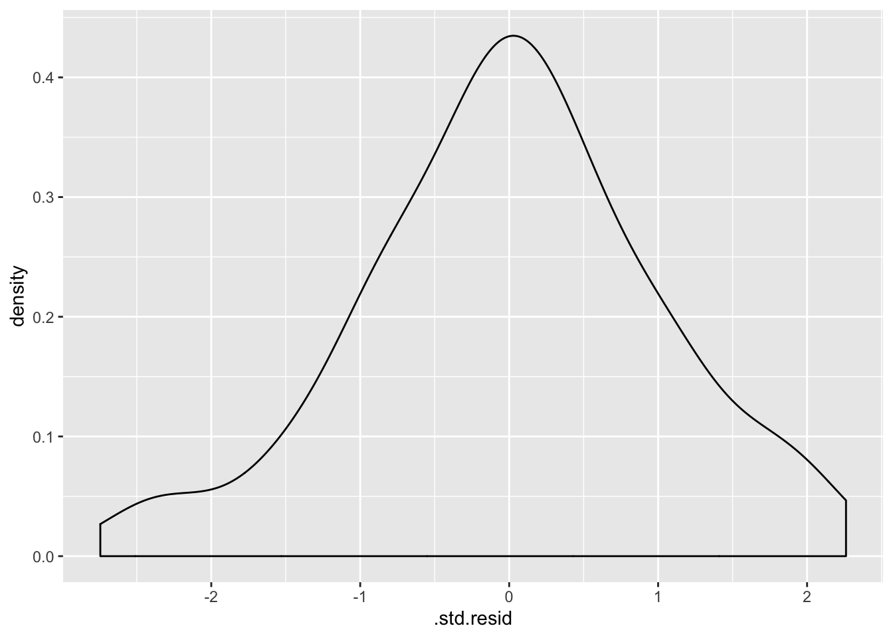

6 Vähimruutude meetodiga fititud mudelite töövoog – lm()
Kuna lm() funktsiooniga ja bayesi meetodil fititud mudeliobjektidega töötamine on mõnevõrra erinev, õpetame seda eraldi. Siinkohal anname põhilise töövoo lm() mudelobjektide inspekteerimiseks.
Töötame m3 mudeliobjektiga, mis on interaktsioonimudel:
Sepal.Width ~ Sepal.Length * Species
ehk
\[Speal.Width = a + b_1*Sepal.Length + b_2*Species + b_3*Sepal.Length*Species\]
library(ggeffects)
m3 <- lm(Sepal.Width ~ Sepal.Length * Species, data = iris)6.1 1. vaatame mudeli koefitsiente
tidy(m3)
#> # A tibble: 6 x 5
#> term estimate std.error statistic p.value
#> <chr> <dbl> <dbl> <dbl> <dbl>
#> 1 (Intercept) -0.569 0.554 -1.03 3.06e- 1
#> 2 Sepal.Length 0.799 0.110 7.23 2.55e-11
#> 3 Speciesversicolor 1.44 0.713 2.02 4.51e- 2
#> 4 Speciesvirginica 2.02 0.686 2.94 3.85e- 3
#> 5 Sepal.Length:Speciesversicolor -0.479 0.134 -3.58 4.65e- 4
#> 6 Sepal.Length:Speciesvirginica -0.567 0.126 -4.49 1.45e- 5Interaktsioonimudeli koefitsientide jõllitamine on sageli tühi töö ja vaimu närimine. Õnneks on meil muid meeotodeid, kuidas lm() mudelitega töötada.
Võrdluseks - nii fitime eraldi mudeli igale irise liigile. Tulemus on tegelikult identne interaktsioonimudeliga kategoorilisele muutujale (Species), aga koefitsiendid on otse tõlgendatavad. Samas, interaktsioonimudelit saab fittida ka pidevale muutujale!
iris %>% split(.$Species) %>%
map(~ lm(Sepal.Width ~ Sepal.Length, data = .)) %>%
map(summary) %>%
map_dfr(~ broom::tidy(.), .id = "Species")
#> # A tibble: 6 x 6
#> Species term estimate std.error statistic p.value
#> <chr> <chr> <dbl> <dbl> <dbl> <dbl>
#> 1 setosa (Intercept) -0.569 0.522 -1.09 2.81e- 1
#> 2 setosa Sepal.Length 0.799 0.104 7.68 6.71e-10
#> 3 versicolor (Intercept) 0.872 0.445 1.96 5.56e- 2
#> 4 versicolor Sepal.Length 0.320 0.0746 4.28 8.77e- 5
#> 5 virginica (Intercept) 1.45 0.431 3.36 1.55e- 3
#> 6 virginica Sepal.Length 0.232 0.0651 3.56 8.43e- 4Adjusteeritud r2 tasub eraldi üle vaadata.
summary(m3)$adj.r.squared
#> [1] 0.610.61 tähendab, et mudel suudab seletada mitte rohkem kui 61% y-muutuja (Sepal.Width) varieeruvusest.
6.2 2. Testime mudeli eeldusi
Nii saab fititud väärtused (.fitted), residuaalid (.resid), fittitud väätruste standardvead (.se.fit). Residuaal = Y data value - fitted value. Seega positiivne residuaal näitab, et mudeli ennustus keskmisele y väärtusele mingil x-muutujate väärtusel on madalam kui juhutb olema tegelik y-i andmepunkti väärtus. See võib olla tingitud y-muutuja normaalsest bioloogilisest varieeruvusest, aga ka sellest, et mudel ei kirjelda täiuslikult x-ide ja y tegelikku seost.
(a_m3 <- augment(m3))
#> # A tibble: 150 x 10
#> Sepal.Width Sepal.Length Species .fitted .se.fit .resid .hat .sigma
#> * <dbl> <dbl> <fct> <dbl> <dbl> <dbl> <dbl> <dbl>
#> 1 3.5 5.1 setosa 3.50 0.0399 -0.00306 0.0215 0.273
#> 2 3 4.9 setosa 3.34 0.0403 -0.343 0.0218 0.272
#> 3 3.2 4.7 setosa 3.18 0.0512 0.0163 0.0354 0.273
#> 4 3.1 4.6 setosa 3.10 0.0591 -0.00380 0.0471 0.273
#> 5 3.6 5 setosa 3.42 0.0385 0.177 0.0200 0.273
#> 6 3.9 5.4 setosa 3.74 0.0581 0.157 0.0455 0.273
#> # ... with 144 more rows, and 2 more variables: .cooksd <dbl>,
#> # .std.resid <dbl>.hat >1 sugereerib high leverage andmepunkte
.std.resid on studentiseeritud residuaal, mis on sd ühikutes (.resid/sd(.resid))
6.2.1 Lineaarsus - residuaalid~fitted plot
Residuals vs fitted plot testib lineaarsuse eeldust - kui .resid punktid jaotuvad ühtlaselt nulli ümber, siis mudel püüab kinni kogu süstemaatilise varieeruvuse teie andmetest ja see mis üle jääb on juhuslik varieeruvus.
ggplot(a_m3, aes(`.fitted`, `.resid`)) +
geom_point(aes(color=Species), alpha=0.5) +
geom_smooth()
6.2.2 Cooki kaugus - outlierid
.cooksd on Cook-i kaugus, mis näitab võimalikke outliereid. rusikareeglina tähendab cooksd > 3 cooksd keskväärtust, et tegu võiks olla outlieriga. Teine võimalus on pidada igat punkti, mis on kõrgem kui 4/n, outlieriks. Kolmanadad arvavad jälle, et outlierina võiks vaadelda iga teistest väga erinevat väärtust, või et .cooksd > 1 v .cooksd > 0.5 on indikatsiooniks nn mõjukast väärtusest (influencial value).
ggplot(data = NULL, aes(x = 1:150, y = a_m3$`.cooksd`)) + geom_col() +
geom_hline(yintercept = 4/150)+
geom_hline(yintercept = 3*mean(a_m3$`.cooksd`), lty = 2)
6.2.3 Mõjukuse plot
outlierid - studentideeritud residuaalid > 2 või < -2 hat > 1 - sugereerib high leverage andmepunkte
library(car)
influencePlot(m3, id.method="identify", main="Influence Plot",
sub="Circle size is proportional to Cook's distance")
#> StudRes Hat CookD
#> 15 -0.243 0.1236 0.00139
#> 42 -2.810 0.0621 0.08307
#> 69 -2.477 0.0253 0.02567
#> 107 -0.331 0.1638 0.00359
#> 119 -2.464 0.0824 0.08782
Mõjukad punktid (Influential observations) omavad suurt mõju mudeli ennustustele. High Leverage andmepunktid on x-muutujate ekstreemsed punktid, mille lähedal ei ole n-mõõtmelises ruumis (kui teil on n x-muutujat) teisi punkte. Seetõttu läheb fititud mudel nende punktide lähedalt mõõda. Mõjukad punktid on tüüpiliselt ka high leverage punktid, kuid vastupidine ei kehti!
6.2.4 Residuaalide normaalsus - qq plot
Kas residuaalid on normaaljaotusega?
car::qqPlot(a_m3$`.std.resid`, distribution = "norm")
#> [1] 42 69
6.2.5 Homoskedastilisus - Scale-location plot
Scale-location plot - homoskedastilisuse eeldust ehk seda, et varieeruvus ei sõltuks prediktormuutuja väärtusest. Y-teljel on ruutjuur studentiseeritud residuaalide absoluutväärtusest
ggplot(a_m3, aes(`.fitted`, `.resid` %>% abs %>% sqrt)) +
geom_point(aes(color=Species), alpha=0.5) +
ylab("square root of absolute residual")+
geom_smooth(se = FALSE)
6.3 Residuaalid y ja x muutujate vastu
Kõigepealt residuaalid y-muutja vastu
ggplot(a_m3, aes(Sepal.Width, `.std.resid`)) + geom_point(aes(color=Species)) + geom_hline(yintercept = 0, lty =2, color ="darkgrey") +
geom_smooth( se=F, color="black", size=0.5)
Mudel paistab süstemaatiliselt alahindama Sepal Width-i seal kus Sepal Length on kõrge, ja vastupidi. Horisontaalne punktiirjoon näitab, kus mudel vastab täpselt andmetele.
Studentiseeritud residuaalid sd ühikutes
Ja nüüd residuaalid x-muutuja vastu.
ggplot(a_m3, aes(Sepal.Length, `.std.resid`, color=Species)) +
geom_point() +
geom_hline(yintercept = 0, lty =2, color ="darkgrey")+
geom_smooth(se=F, color="black", size=0.5) Ideaalsed residuaalid!
Ideaalsed residuaalid!
6.4 Teeme mudeli põhjal ennustusi (marginal plots)
Me ennustame Y-i keskmisi väärtuseid etteantud X-i väärtustel.
ggpredict() ennustab y-muutuja väärtusi ühe x-muutuja väärtuste järgi, hoides kõiki teisi x-muutujaid konstantsena.
Kõigepealt võrdleme lihtsa 1 prediktoriga mudeli ennustust kahe prediktoriga mudeli ennustusega
lm1 <- lm(Sepal.Width ~ Sepal.Length, data = iris)
lm2 <- lm(Sepal.Width ~ Sepal.Length + Petal.Length, data = iris)
mydf <- ggpredict(lm1, terms = "Sepal.Length")
mydf2 <- ggpredict(lm2, terms = "Sepal.Length")
ggplot(mydf, aes(x, predicted)) +
geom_line() +
geom_ribbon(data = mydf, aes(ymin = conf.low, ymax = conf.high),
alpha = 0.5, fill="lightgrey") +
geom_line(data = mydf2, aes(x, predicted), lty=2)+
geom_ribbon(data = mydf2, aes(ymin = conf.low, ymax = conf.high),
alpha = 0.5, fill="lightgrey") +
geom_point(data=iris, aes(Sepal.Length, Sepal.Width, color=Species)) +
xlab("Sepal Length") +
ylab("predicted sepal width")+
theme_classic()
terms argument võtab kuni 3 muutujat, neist 2 peavad olema faktormuutujad ja 3 muutuja korral tekib tabelisse veerg nimega facet, mille abil saab tulemused facet_wrap()-ga välja plottida.
mydf <- ggpredict(m3, terms = c("Sepal.Length", "Species"))
ggplot(mydf, aes(x, predicted)) +
geom_line(aes(color=group)) +
geom_point(data=iris, aes(Sepal.Length, Sepal.Width, color=Species)) +
xlab("Sepal Length") +
ylab("predicted sepal width")
Nii saab sisestada üksikuid parameetriväärtusi ja neile ennustusi teha:
(mydf1 <- ggpredict(m3, terms = c("Sepal.Length [5, 22]", "Species [setosa, versicolor]")))
#>
#> # Predicted values for Sepal.Width
#> # x = Sepal.Length
#>
#> # setosa
#> x predicted conf.low conf.high
#> 5 3.42 3.35 3.5
#> 22 17.00 13.32 20.7
#>
#> # versicolor
#> x predicted conf.low conf.high
#> 5 2.47 2.31 2.63
#> 22 7.91 5.53 10.286.4.1 4. Võrdleme mudeleid
Eeldus - kõik võrreldavad mudelid on fititud täpselt samade andmete peal.
Eeldus (ei ole vajalik AIC meetodi puhul) - tegemist on nn nested mudelitega. Nested mudel tähendab, et kõik väiksema mudeli liikmed on olemas ka suuremas mudelis.
Mudelite võrdlus ANOVA-ga (ainult nested mudelid)
tidy(anova(lm1, lm2, m3))
#> Warning: Unknown or uninitialised column: 'term'.
#> # A tibble: 3 x 6
#> res.df rss df sumsq statistic p.value
#> * <dbl> <dbl> <dbl> <dbl> <dbl> <dbl>
#> 1 148 27.9 NA NA NA NA
#> 2 147 15.4 1 12.5 169. 4.83e-26
#> 3 144 10.7 3 4.71 21.2 2.06e-11Mudelite võrdlus AIC-ga
AIC(lm1, lm2, m3)
#> df AIC
#> lm1 3 179.5
#> lm2 4 92.1
#> m3 7 43.3AIC (Akaike Informatsiooni Kriteerium) on number, mis püüab tabada mõistlikku tasakaalu mudeli fiti valimiandmetega ja parsinoomia vahel. Väiksema AIC-ga mudel on eelistatud suurema AIC-ga mudeli ees (samas, AIC-l kui ühel arvul puudub tõlgendus).
Probleem AIC-i taga on selles, et parem fit valimiandmetega võib tähendada mudeli ülefittimist (ja seega halvemat mudelit). Kuna ülefittimise tõenäosus kasvab koos mudeli keerukusega (parameetrite arvuga), eelistame võimalikult lihtsat mudelit, mis samas seletaks võimalikult suure osa valimiandmete varieeruvusest.